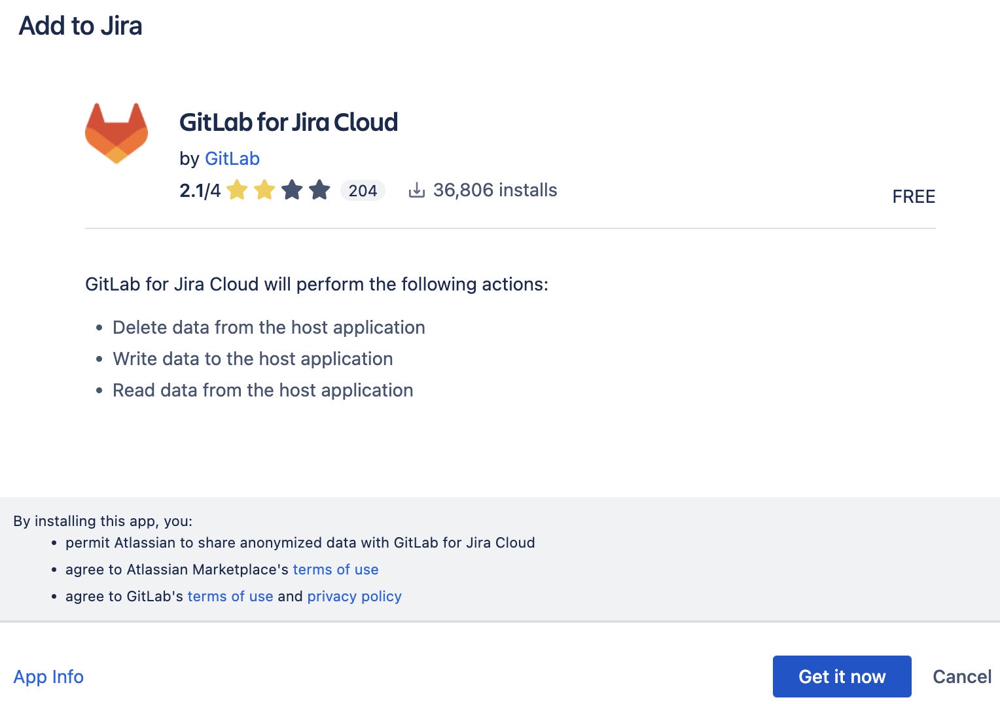
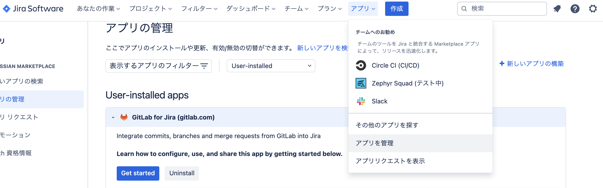
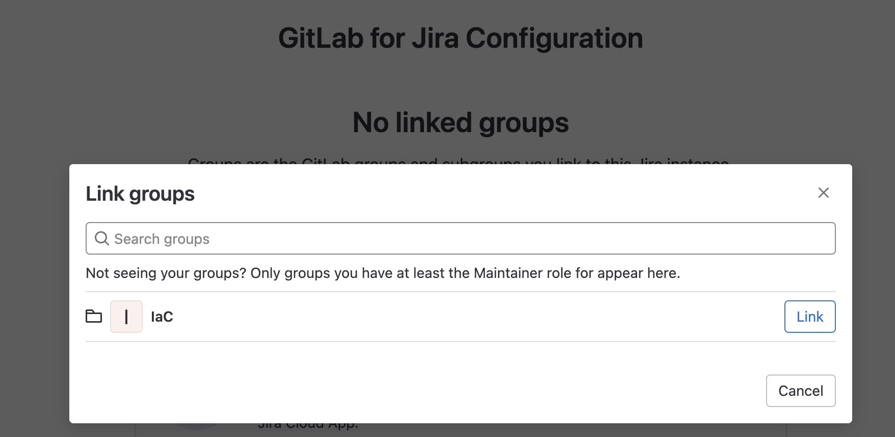
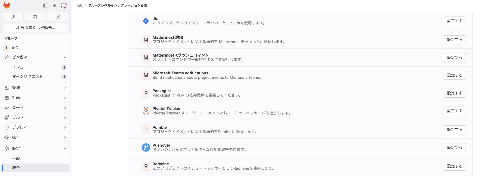
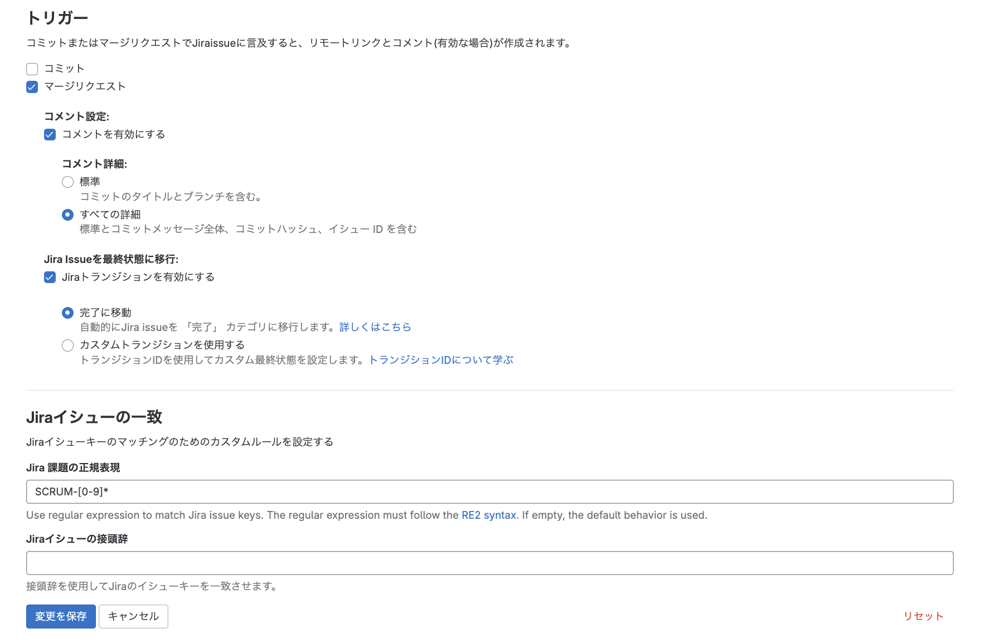
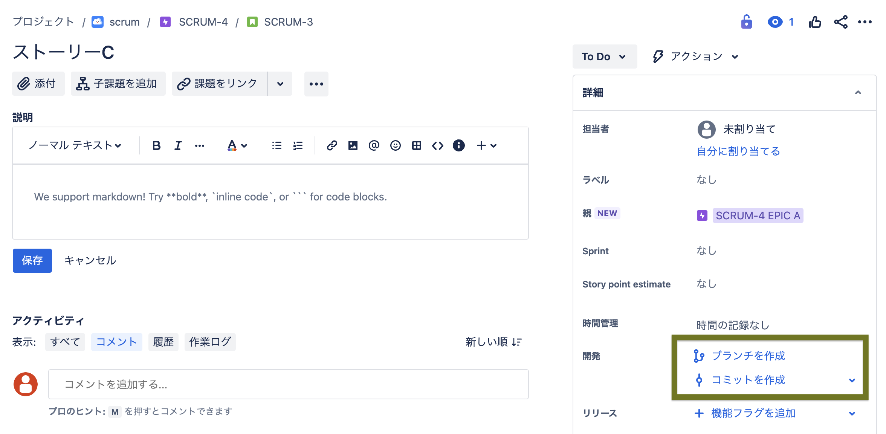
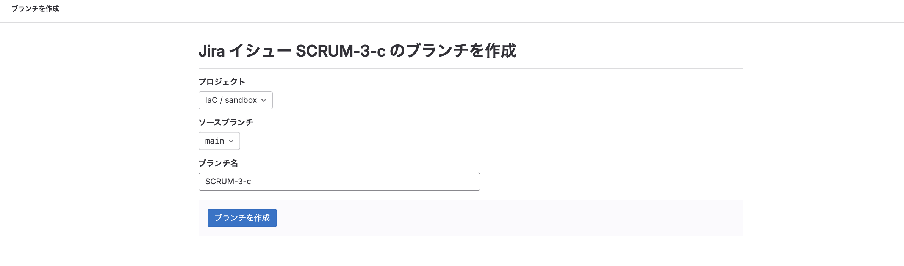
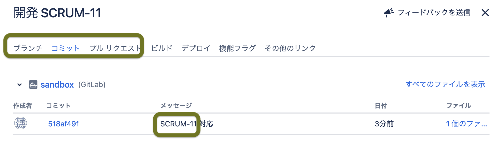
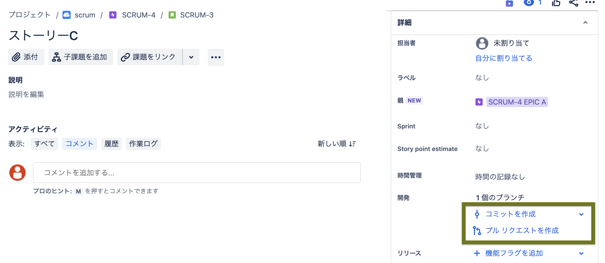
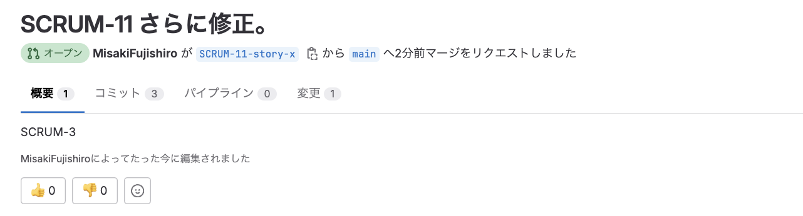

gitlabとjiraの連携¶
連携単位¶
連携はJIRAのアカウント単位と、GitLabのグループ単位で連携を行うことができる。 GitLabのグループは設定から追加ができる。
設定手順¶
SaaSのgitlabとjiraを利用しているのか、Server上のものを利用しているのかで、利用するプラグインが異なる。
今回はGitlab.com for Jira Cloudを利用して設定手順を整理する。
プラグインの名称 |
対象製品 |
手順 |
|---|---|---|
GitLab Saas と Jira Cloud版の連携に使用する |
||
GitLab Self-Managed と Jira DataCenter版・Server版 の連携に使用する |
基本的には、公式の 手順書 に従って、設定を行う。
マーケットプレイスのインストール¶
Atlassian Marketplace に進んで GitLab.com for Jira Cloud アプリをインストール

jira側の設定¶
Jira の [アプリを管理] ページで、GitLab for Jira アプリの詳細を展開して [開始] を選択

Sign in to gitlabを選択してgitlabを認証
Linkの画面で連携するgitlabでPJを選択

gitlab側の設定¶
プロジェクトに移動して [設定] > [統合] の順に選択します。
[統合を追加] で [Jira] を選択します。

Jira サイトの詳細を次のように入力します。
Web URL - Jira サイトの URL (例: https://myjirasite.atlassian.net)
ユーザー名またはメール アドレス - Jira プロファイルに登録されているユーザー名またはメール アドレス。
パスワードまたは API トークン - API トークンを作成してクリップボードにコピー & ペーストします。
[変更を保存] を選択
統合の設定¶
★★★★★要確認★★★★★ 
連携機能¶
JIRAからBranchを作成¶
連携が完了すると、jiraの課題やIssueからBranchを作成することが可能になる。

ブランチを作成を押下すると、gitlabのページに移動して、ブランチを作成するProjectとブランチ名を指定する。

ブランチの管理¶
コミット管理¶
作成されたブランチに対する、コミットやマージリクエストの状態を一覧で確認することが可能で、進捗状況を見ることができる。
コミットを管理するためには、gitlabでBranchを修正する際のコミットメッセージに、PJID-NUMを入れる。

MR管理¶
MRについては、2つの方法でMRとJIRAの課題を紐づけることができる
JIRAから作成されたブランチについては、自動的に作成元の課題と紐付けられる
コミットと同様にMRのコメントに
PJID-NUMを追加すると、対象の課題とMRも紐付けられる。 以下の例では、SCRUM-11から作成されたMRだがコメントにSCRUM-3と入っているので両方の課題に紐付けられる 
★★★★★MRしたらストーリーを完了に移動できるかチェック★★★★★
JIRAからIssue作成（プレミアム）¶
gitlabがプレミアムの場合に、JIRAからIssueを発行できる。